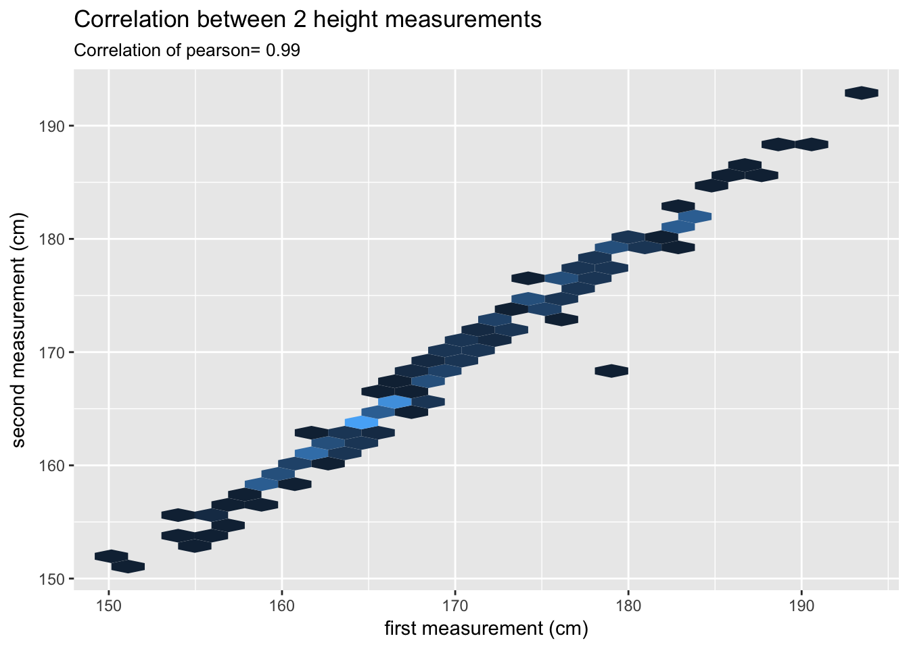

This document is a first exploratory analysis of the UKBiobank dataset. It describes basic features, and aims to check what we are going to be able to do concerning mental disease and comorbidity. Basically it shows:
A few libraries are necessary to run this analysis.
library(readr)
library(tidyverse)
library(treemap)
library(RColorBrewer)
library(lubridate)
library(xtable)
library(knitr)
library(DT)The UKB dataset is quite heavy (~2G). It contains about 500 000 individuals. I selected only a few fields, targeting general stuff + time stamp + mental disease. Let’s load the dataset:
# Read the data already takes minutes.
nline=5000
data=read_tsv("0_DATA/UKB_phenos.txt.gz", n_max=nline)Just a quick check to the individual ID of each line. They should be unique, since each line represent one person. And the number are random. This is important coz it means that a link with the dataset of someone else is impossible. Do I have repeated ID?
a=table(data[,1])
cat("ok")## okThe human diseases are classified by the WHO (World Health Organization) disease classification ( International Statistical Classification of Diseases: ICD). This file is quite huge: ~19000 lines. Each type of disease is coded. Example: A00=cholera. There are several nivel of classification.
This document is described extensively here. Let’s load it and have a look to it:
#Read the file
load("0_DATA/WHO_disease_classification_clean.R")
head(ICD)Suppose somebody has 3 ICD10 diseases. We are highly interested to know WHEN each disease was discovered. The phenotype file provides us with the number of time somebody has been to the hospital. But an external file is needed to know when it was.
The HES (Hospital Episode Statistics) data provides this information.
Load it:
#HES=read_tsv("/ibscratch/wrayvisscher/Yan_Holtz/3_UKB_COMO/DATA/RECORD_REPOSITORY/ukb_hesin.tsv")Note that we need a bridge file to make the links with the phenotype because this info comes from the application of John, not the one from Naomi and Peter like for the phenotype.
#bridge=read_delim("/ibscratch/wrayvisscher/Yan_Holtz/3_UKB_COMO/DATA/ukb_bridgingfile_12505_10214.txt", delim=" ")Sex is coded with 0 (women) and 1 (male).
# The column is coded with 0=female and 1=male
t=table(data$f.31.0.0)
a=t[1]
b=t[2]
c=round(a/nrow(data)*100 , 2)
d=round(b/nrow(data)*100 , 2)In the dataset I have 2784 women (55.68%) and 2216 men (44.32%).
Apparently height has been measured 3 times, thus 3 columns are available in the dataset. Sometimes, the same person has been measured several times, allowing to estimate the repeatability of the height measurment.
tmp=data[ , c("f.50.0.0", "f.50.1.0", "f.50.2.0" )]
my_cor=cor(data$f.50.0.0, data$f.50.1.0, use="complete.obs")
ggplot(tmp, aes(x=f.50.0.0, y=f.50.1.0)) +
geom_hex(bins=40) +
labs(
x="first measurement (cm)",
y="second measurement (cm)",
title="Correlation between 2 height measurements",
subtitle=paste("Correlation of pearson=", round(my_cor,2))
)+
theme(legend.position="none")
#help(geom_bin2d)3 columns are available for the place of birth. Sometimes, several distincts values are provided for the same individual what is a bit weird. Let’s have a look to the UK map?
data %>%
#head(1000) %>%
ggplot( aes(y=f.129.0.0, x=f.130.0.0) ) +
#stat_density_2d(geom = "raster", aes(fill = log(..density..)), contour = FALSE) +
geom_point(alpha=0.05, size=0.8) +
theme_minimal() +
labs(
x="",
y="",
title="Where UKBiobank people were born",
sub=paste("n:",nrow(data))
) +
theme(
legend.position="none",
axis.title=element_blank(),
axis.ticks = element_blank(),
axis.text = element_blank(),
panel.grid=element_blank(),
panel.background = element_rect(color="black", fill= alpha("skyblue",0.1))
)There are 24 UKB center all around UK. Here is an idea of their importance:
data %>%
select(f.54.0.0) %>%
table() %>%
data.frame() %>%
arrange(Freq) %>%
mutate(center = factor(., .)) %>%
ggplot(aes(x=center, y=Freq)) +
geom_bar(stat="identity", fill="skyblue") +
labs(
x="assesment center",
y="Number of assesment realized during the study",
title="Most important UKB Assessments centers"
) +
coord_flip()One more time we have 3 columns for the same trait. Let’s check the correlation between measurements made on the same individuals.
#data %>% head() %>% select("f.21001.0.0", "f.21001.1.0")
ggplot(data, aes(x=f.21001.0.0, y=f.21001.1.0)) +
geom_hex(bins=40) +
labs(
title="Correlation between 2 BMI measurements",
subtitle=paste("Correlation of pearson=", round(my_cor,2))
) Let’s compare the distribution of IMB for male and female?
# Prepare 2 vectors, one per sex
fem=data %>% filter(f.31.0.0==0) %>% select(f.21001.0.0)
mal=data %>% filter(f.31.0.0==1) %>% select(f.21001.0.0)
# Plot
ggplot() +
geom_density(data=fem, aes(x = f.21001.0.0, y = ..density..), fill="pink", alpha=0.3) +
geom_density(data=mal, aes(x = f.21001.0.0, y = -..density..), fill="blue", alpha=0.3) +
xlab("Body Mass Index") +
ylim(-0.12, 0.12) +
#annotate("text", x = c(50,50), y = c(0.07, -0.07), label = c("Women", "Men")) + # , color=c(alpha("pink",0.7), alpha("blue",0.3)), size=6 , angle=0, fontface="bold") +
coord_flip() +
ggtitle("Distribution of the Body Mass Index (BMI) for Men and Women")The ethnical background is known, but encoded. The first step is to get the encription key: it allows to go from a number to a human readable origin.
ethni_key=data.frame(
code=c("1","1001","2001","3001","4001","2","1002","2002","3002","4002","3","1003","2003","3003","4003","4","2004","3004","5","6","-1","-3"),
value=c("White","British","White and Black Caribbean","Indian","Caribbean","Mixed","Irish","White and Black African","Pakistani","African","Asian or Asian British","Any other white background","White and Asian","Bangladeshi","Any other Black background","Black or Black British","Any other mixed background","Any other Asian background","Chinese","Other ethnic group","Do not know","Prefer not to answer")
)
#ethni_keyNow let’s check howmany people are in each group? And represent that with a treemap
# prepare data
data$f.21000.0.0=as.factor(data$f.21000.0.0)
tmp=as.data.frame(table( data$f.21000.0.0 ))
colnames(tmp)=c("code","freq")
tmp$value=ethni_key$value[ match( tmp$code, ethni_key$code ) ]
# make the treemap
treemap(tmp, index=c("value"), vSize="freq", type="index",
inflate.labels=T,
fontface.labels=1,
fontsize.labels=2)Relation between age and ethnical origin? It gives an insight of the evolution of the foreigners in the UK !
# needs to be a factor
data$f.21000.0.0=as.factor(data$f.21000.0.0)
# Create a color palette as long as needed
getPalette = colorRampPalette(brewer.pal(9, "Set1"))
# plot the stackbarplot
data %>%
filter(f.21000.0.0 != 1001 & f.21000.0.0 != 2 & f.21000.0.0 != 4 ) %>%
ggplot(aes(x=f.21022.0.0, group=f.21000.0.0, fill=f.21000.0.0)) +
geom_bar(position="fill")+
labs(
x="Age at the beginning of the survey",
title="Proportion of minor ethnical origins in the UKBiobank Dataset"
)+
scale_fill_manual(name="Ethnical Origin", breaks=tmp$code, labels=tmp$value, values = colorRampPalette(brewer.pal(11,"Set1"))(22)) Let’s show the number of assessment that have been done each week between 2006 and 2010. Apparently, a few first trials have been done on 2006. Then the experiment really started on the 20th week of 2007 and finish on the 30th week of 2010.
# Change the format of this column, it must be a date.
data$f.53.0.0=as.Date(data$f.53.0.0)
# Change format with lubridate and show the data with ggplot2.
data %>%
mutate(year=year(f.53.0.0), week=week(f.53.0.0)) %>%
ggplot( aes(x=week, fill=year)) +
geom_histogram() +
facet_wrap(~year, scales = "fixed", nrow=1) +
ylab("number of assessment realized each week") +
theme(
legend.position="none"
)What is the age of people at rectruitement?
ggplot(data, aes(x=f.21022.0.0)) +
geom_histogram(fill="skyblue", color="white", alpha=0.7) +
xlab("Age at recruitment") +
ggtitle(paste("Age at recruitment | f.21022.0.0 | n=",nrow(data), " | average=", round(mean(data$f.21022.0.0),1 ) ) )There are a lot of NA in this field –> that’s the people who are still alive. Let’s visualize the distribution of the date of death of people:
# needs to be a date to be plotted properly
data$f.40000.0.0=as.Date(data$f.40000.0.0)
# plot
data %>%
mutate(week=week(f.40000.0.0), year=year(f.40000.0.0)) %>%
ggplot(aes(x=week)) +
geom_histogram(fill="red", color="white", alpha=0.4) +
xlab("Date of death") +
ggtitle(paste("Age at recruitment | f.21022.0.0 | n=",nrow(data), " | average=", round(mean(data$f.21022.0.0),1 ) ) ) +
facet_wrap(~year)dead=length(which(!is.na(data$f.40000.0.0)))
tot=nrow(data)
prop=dead/tot*100
prop## [1] 3.08So some people are dead DURING the experiment. Others are dead after the last assessment. Some are still alive. The proporstion of dead people is 3.08.
I know the date of death + the age at death, so I can easily calculate the birth data if neccessary.
ggplot(data, aes(x=f.40007.0.0)) +
geom_histogram(fill="skyblue", color="white", alpha=0.7) +
xlab("Age at death") +
ggtitle(paste("Age at death | f.40007.0.0 | n=",nrow(data), " | average=", round(mean(data$f.40007.0.0, na.rm=T),1 ) ) )There is a column named “Data of admission to hospital”: f.41096.0.0. Here is the distribution of this variable:
data %>%
filter(f.41096.0.0<50) %>%
ggplot(aes(x=f.41096.0.0)) +
geom_histogram(fill="skyblue", color="white", alpha=0.7) +
xlab("Value of f.41096.0.0, with only value < 50") +
ggtitle(paste("Distribution of f.41096.0.0 | n=",nrow(data), " | max=", max(data$f.41096.0.0, na.rm=T) ) )Relationship with the number of “date of dicharge”
data %>%
filter(f.41096.0.0<50) %>%
ggplot(aes(x=f.41096.0.0, y=f.41101.0.0)) +
geom_hex()Sometimes I have several column for the same phenotype. Does each column correspond to a specific date?
When someone is sick, its diseases is classified in one of the ICD categories. The corresponding code are written in the field f.41202.0.to f.41202.0.379 for the first diagnoses. A second diagnoses can be found and thus writtent in the fields f.41204.0.0 to f.41204.0.434.
The diseases are encoded. In order to understand the data, I need to merge that with the ICD data frame that explains the codes. I am going to count the occurence of each disease, and add the signification of each in the same table. Note that I use every column of both ICD10 primary AND secondary diagnoses:
dis_freq=data %>%
select( f.41202.0.0:f.41202.0.379 , f.41204.0.0:f.41204.0.434 ) %>%
gather(key='column', value='disease') %>%
na.omit() %>%
group_by(disease) %>%
count() %>%
left_join(ICD, by = c("disease" = "coding_L4"))dis_freq = occurence of each ICD10 code!
We can do a treemap to see the importance of the 22 groups of diseases?
# count the occurence of each category
tmp = dis_freq %>%
group_by(short) %>%
summarize(tot=sum(n)) %>%
na.omit()
# basic treemap
p=treemap(tmp,
index=c("short"),
vSize="tot",
type="index"
) # make it interactive ("rootname" becomes the title of the plot):
#inter=d3tree2( p , rootname = "General" )Another way to visualize that:
tmp %>%
arrange(tot) %>%
mutate(short = factor(short, short)) %>%
mutate(mycol=ifelse(short=="Mental","Mental","other")) %>%
ggplot(aes(x=short, y=tot, fill=mycol)) +
geom_bar(stat="identity") +
labs(
x="Disease category",
y="Number of case",
title="Most common diseases observed in the UKB study",
subtitle="primary AND secondary diagnoses"
) +
theme(legend.position="none") +
coord_flip()What is the proportion of people with no disease at all? The proportion of people with 1 disease ONLY?
data %>%
select( f.41202.0.0:f.41202.0.379 , f.41204.0.0:f.41204.0.434 ) %>%
is.na %>%
`!` %>%
rowSums %>%
table() %>%
data.frame() %>%
ggplot(aes(x=., y=Freq)) +
geom_bar(stat="identity") +
xlab("number od disease") +
ylab("number of people") +
ggtitle("number of people with X disease in the UKB") +
coord_flip() For each diagnosis, the patient fills the first column if he has a disease on its first visit to the hospital. Then, eventually a second one if he goes back to the hospital and another disease is found and so on. So the number of disease in the column1 is > at the column 2 > column 3…
Let’s visualize it for the first diagnosis.
first=which(colnames(data)=="f.41202.0.0")
my_prop=c()
for(i in c(1:379)){
a=data[ , first+i-1]
with=length(which(!is.na(a)))
tot=nrow(data)
prop=with/tot*100
my_prop=c(my_prop,prop)
}
barplot(my_prop, xlim=c(0,52), xlab="number of NON na value in each ICD column")OK, so only the 52 first columns have data, others are only NA actually. Is it possible to have a field with a disease if the field just before was NA? Does it happen?
nrow(data[ is.na(data$f.41202.0.0) & !is.na(data$f.41202.0.1) , ])NO. So if someone has no disease, he has NA in every column. If someone has 1 disease, his first column ONLY is filled… and so on.
The ICD is organized in 22 categories. The 5th category is the one that is going to interest us: Mental and behavioural disorders. It means the disorders of psychological development. The codes related to this category always start with a F.
nmental = tmp %>% filter(short=="Mental") %>% select('tot')
pmental = nmental / nrow(data) * 100 In the UKB dataset, 625 people have been diagnosed with one or more mental disease. It represents 12.5 % of the population following this dataset. But there is a bias! : If somebody has several mental diseases, this script counts it like if it was several patients! –> need another method to calculate that.
Let’s build a subset of the UKB with only people concerned by mental disease.
mental=dis_freq %>%
filter(node_L1==5) %>%
select(disease, n, meaning_L4, meaning_L3, meaning_L2, short)The architecture of mental diseases is presented in a dedicated document.
We have 66 different mental diseases that have been observed (level 4), displayed in 28 category of level 3, and in 9 category of level2.
Occurence of these groups and subgroups can be seen as follow.
# basic treemap
p=treemap(mental,
index=c("meaning_L2", "meaning_L3"),
vSize="n",
type="index"
) Here is the detail of the most common mental diseases:
tmp = mental %>% arrange(desc(n)) %>% mutate(inPerc= n/nrow(data) * 100)
datatable(tmp, filter = 'top', rownames = FALSE )Seen in a graphic:
mental %>%
arrange(n) %>%
tail(20) %>%
ungroup() %>%
mutate(meaning_L4 = factor(meaning_L4, meaning_L4)) %>%
ggplot(aes(x=meaning_L4, y=n)) +
geom_bar(stat="identity", color='white', fill='skyblue') +
labs(
x="Disease category",
y="Number of case",
title="Most common diseases observed in the UKB study",
subtitle="primary AND secondary diagnoses"
) +
theme(legend.position="none") +
coord_flip()Note: Here I give proportion per sub-subgroup of disease. Note that I cannot easily aggregate at the subgroup level because I can cannot sum this proportion. Why? Because one person can have several disease.
A work by Yan Holtz
Yan.holtz.data@gmail.com